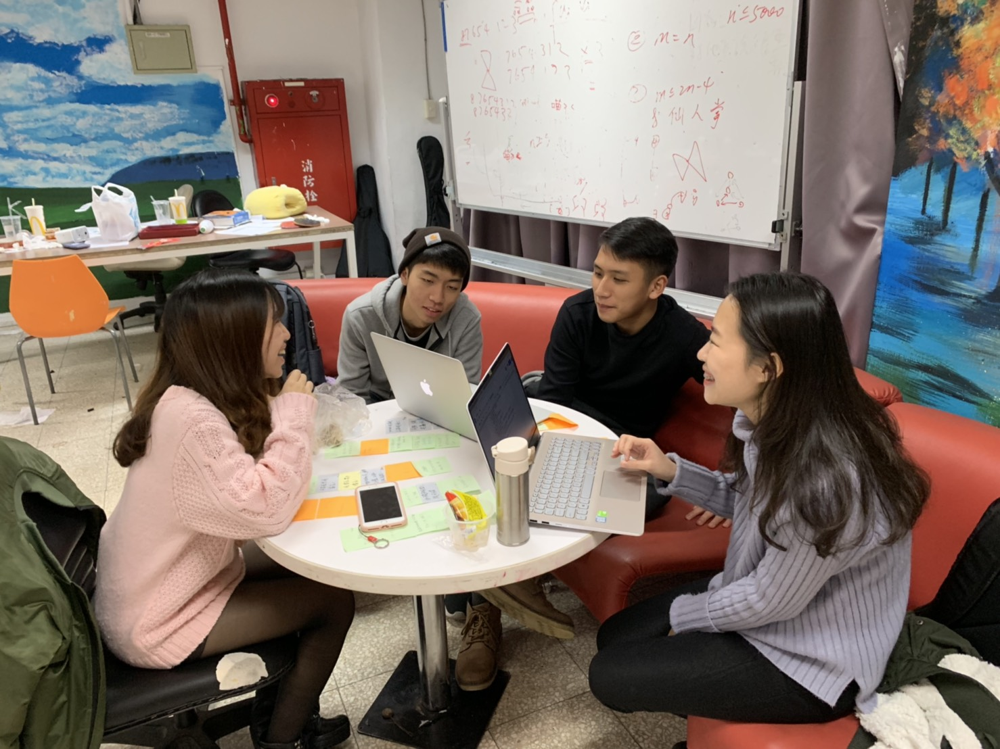
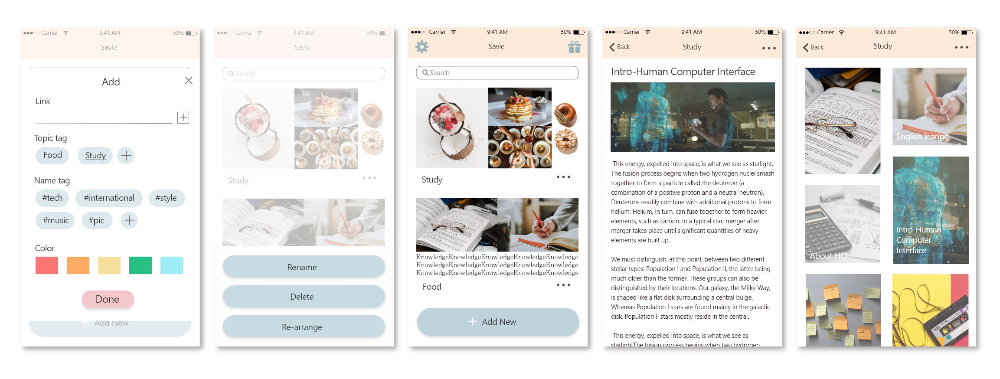
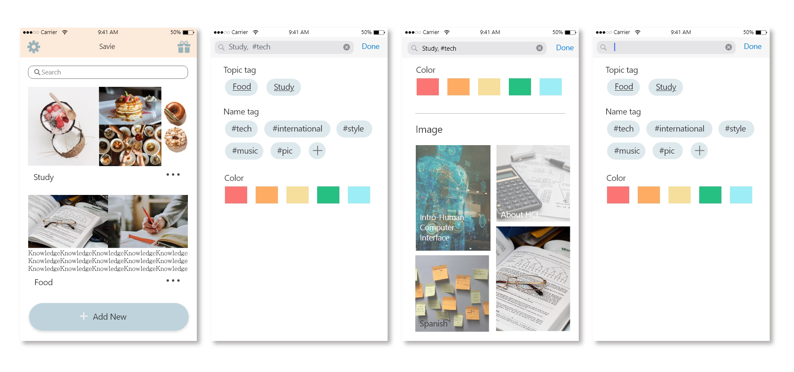
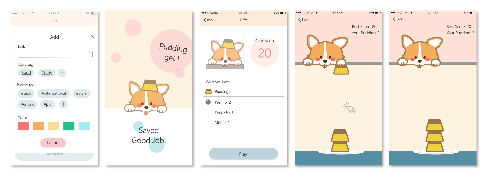
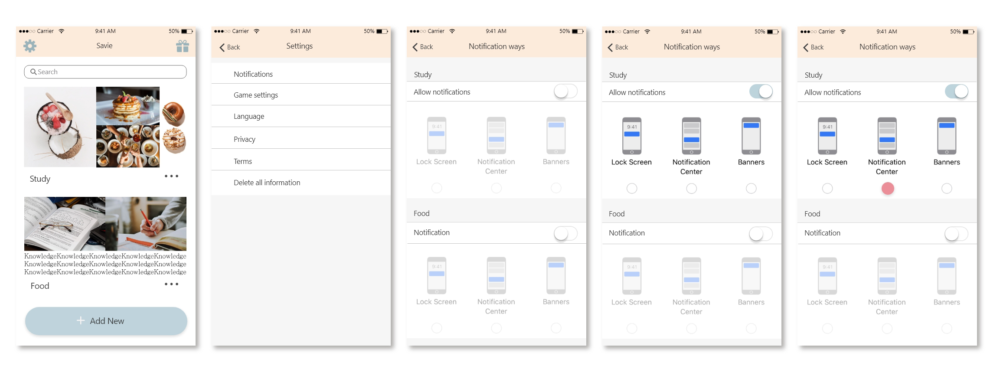

a. Needfinding: Interview
The purpose of this interview is to understand the reason and habits of saving information. In the beginning, we interviewed 15 people in total, from college students to office workers, from 20 to 66 years old, and we also interviewed some extreme users and strangers to find something that we might expect.(We actually did this process twice since we reset the questions and made it more accurate.)
Later, we gather those feedback and use empathy map to organize what they feel and their needs. Then, we found that…
- People save information is because they are interesting in it or it might be helpful someday, but they might not check it again. If the information contain lots of knowledge, the possibility of re-reading will happen.
- The exist categorizing way in most of the social media is not intuitive.
- They are annoyed by find the information they saved, and it always waste lots of time to get the right one.
- The way of reminding frequency differs from people, so that it should be customized.

b. "How Might We !?"
According to these results, we set 3 “how might we”, which are:
- How Might We change the ways of notification, and try not to bother the users?
- How Might We make the users’ process of categorizing content less painful?
- How Might We turn the process of finding saved content more enjoyable?
Point of View
POV1：we met "喜歡存對自己有幫助/純粹有興趣內容”的大學生。we were amazed to realize 他們回去看的比例不高，常只是存安心，但要回去看時常找不到東西。It would be game-changing to 幫他們更方便找到儲存內容（建立分類或統一管理，並開啟個人化的提醒）。
POV2：We met 采鋒。 We were amazed to realize 如果是文章類型，會希望能被提醒，圖片類型就還好，一下就看得完。 It would be game-changing to 儲存的東西可以狀況調整被是否提醒。
c.Experience Prorotype
Hence, we design 3 experienced prototype for each “how might we”, which might become the function in app, and test the usability as well as obtain interviewers’ feedback.
We modified 3 notification ways, which are What’s app style, watch it later style and passive style
→ “The watch it later style and passive style are better because it won’t bother me”
Testing the customized category way and know how they feel when getting feedback such as quotes and cute picture after categorizing information successfully.
→ “Too customized will make users overwhelmed and it will be better if there are some defaults. Besides, the pictures are really adorable!’’
We will set some questions about the information, and interviewers had to find out the correct things from the category that they set. Moreover, the scenario changed, our team member will also become the search engine and find the correct information from those categories by interviewer telling the key words.
→”The category topic and key words are the fastest way to find information. ”
Low-Fi Prototype


Medium-Fi Prototype




High-Fi Prototype
Poster
Jay Tsai
UX, App Programmer
Cecilia Lin
UX/UI Designer, Web Programmer
Leo Chen
UX, App Programmer